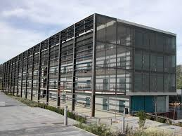
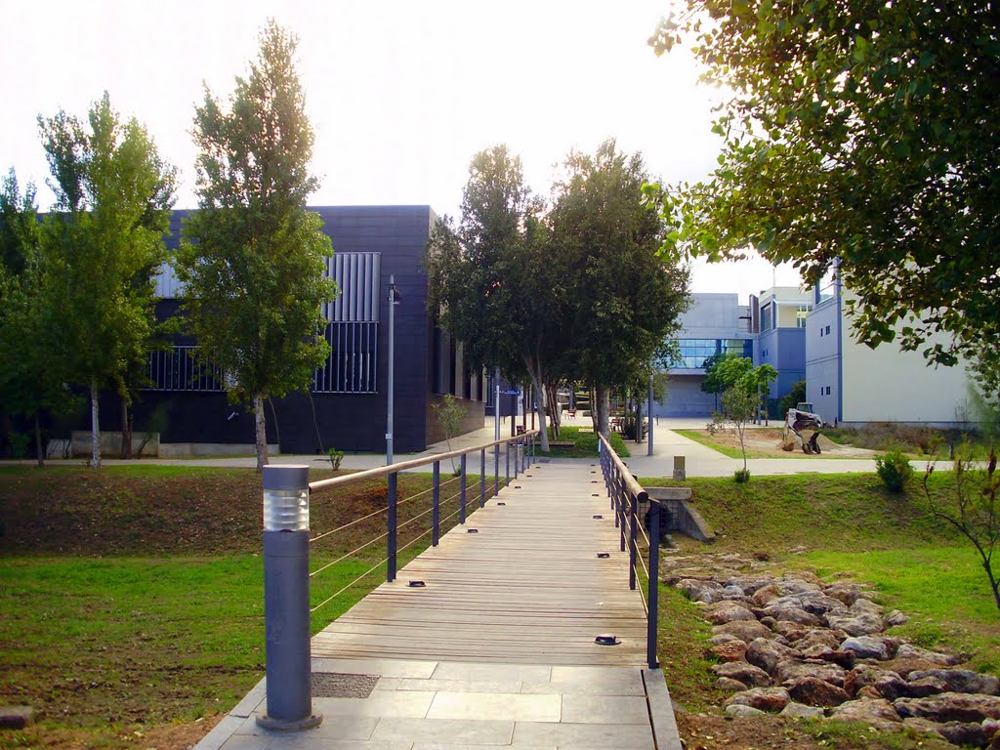
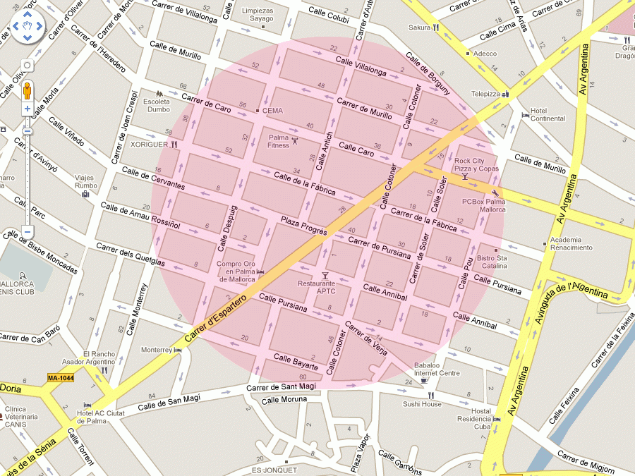

Inicio
Inicio Info
InfoUniversidad Autónoma de Canamunt
lmsgi04
La UAC ofrece alojamiento Universitario a través del Colegio Mayor Blanquerna y de la Residencia Universitaria Martiana dentro del Campus.Existe el programa "Convive" en colaboración con la Oficina de Acción Solidaria y Cooperación que es una inciativa intergeneracional entre una persona mayor que vive sola y un estudiante.Existen una serie de colegios mayores, adscritos a la UAC, pero no gestionados por la Universidad.
 Nuestras instalaciones se encuentran en la zona Universitaria de Son Puig.
Si quieres matricularte o informarte no dudes en contactar con nosotr@s: